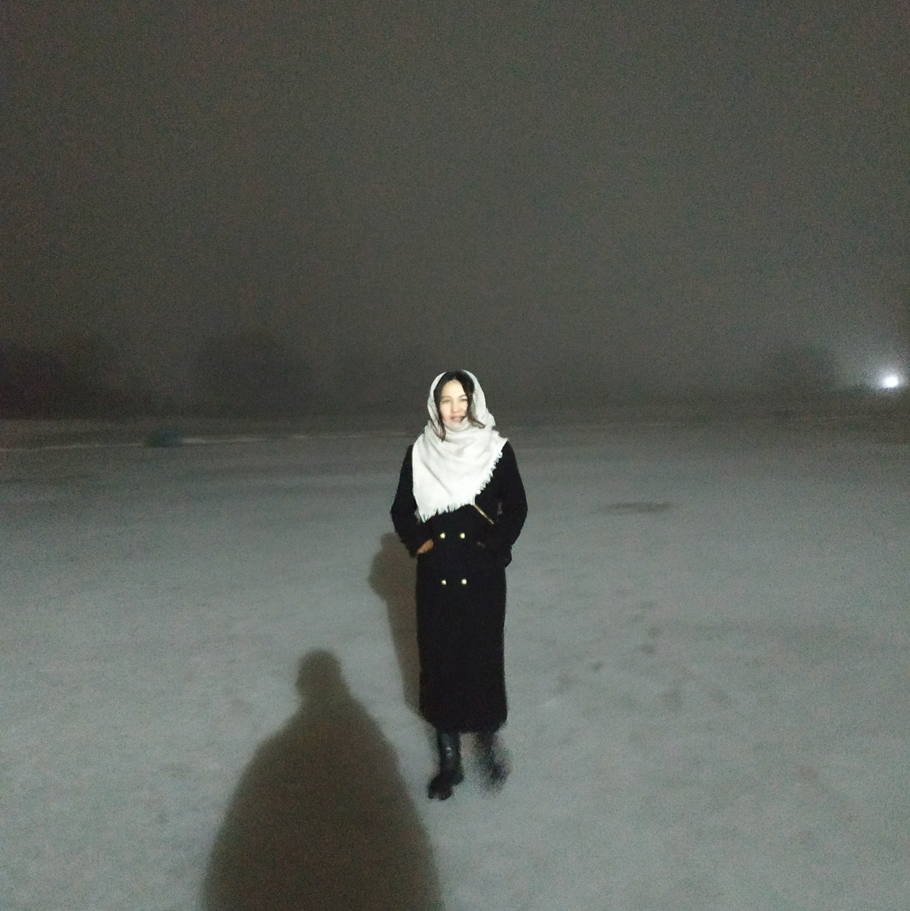
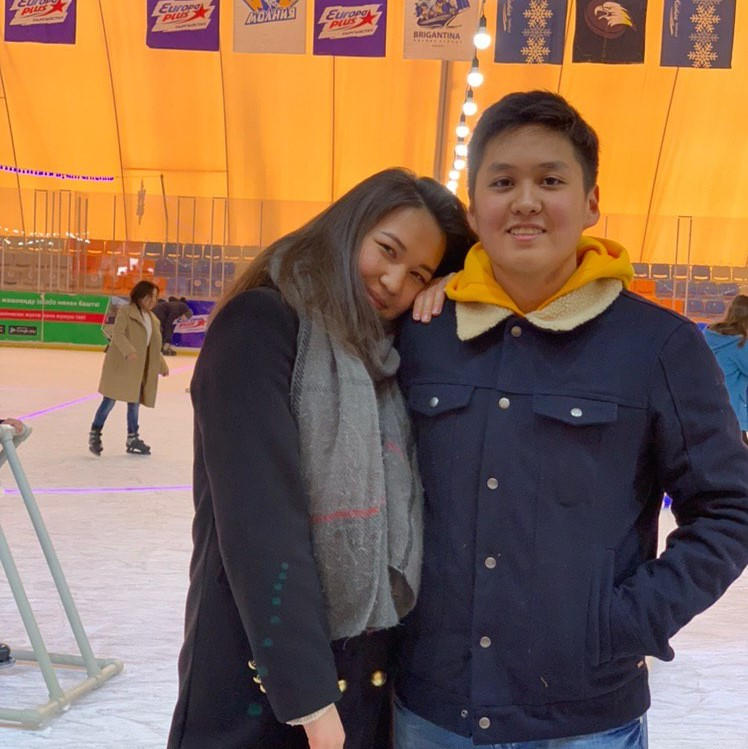
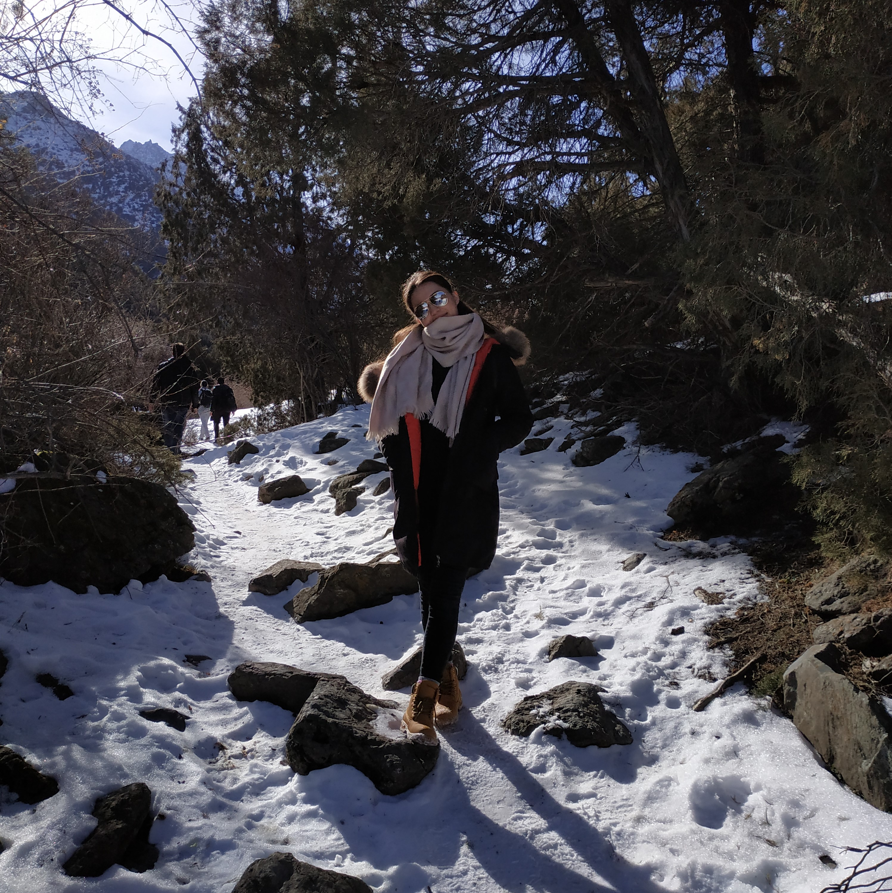
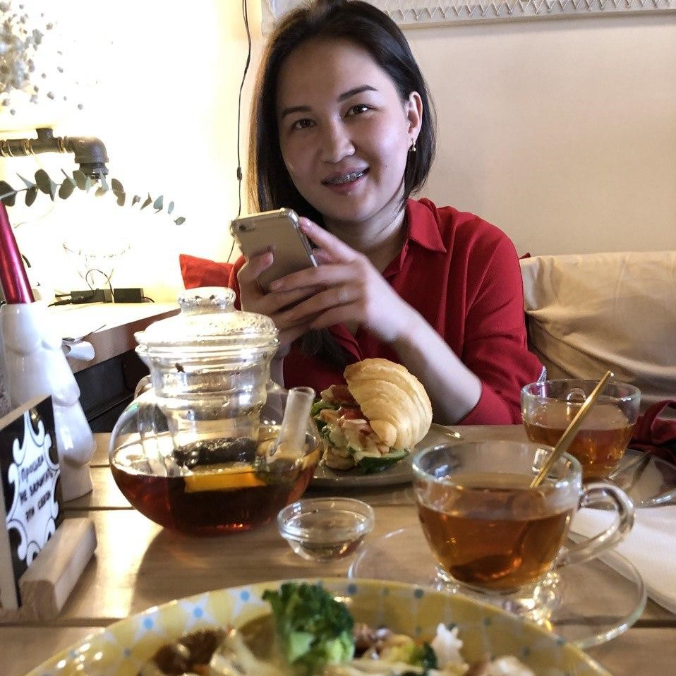
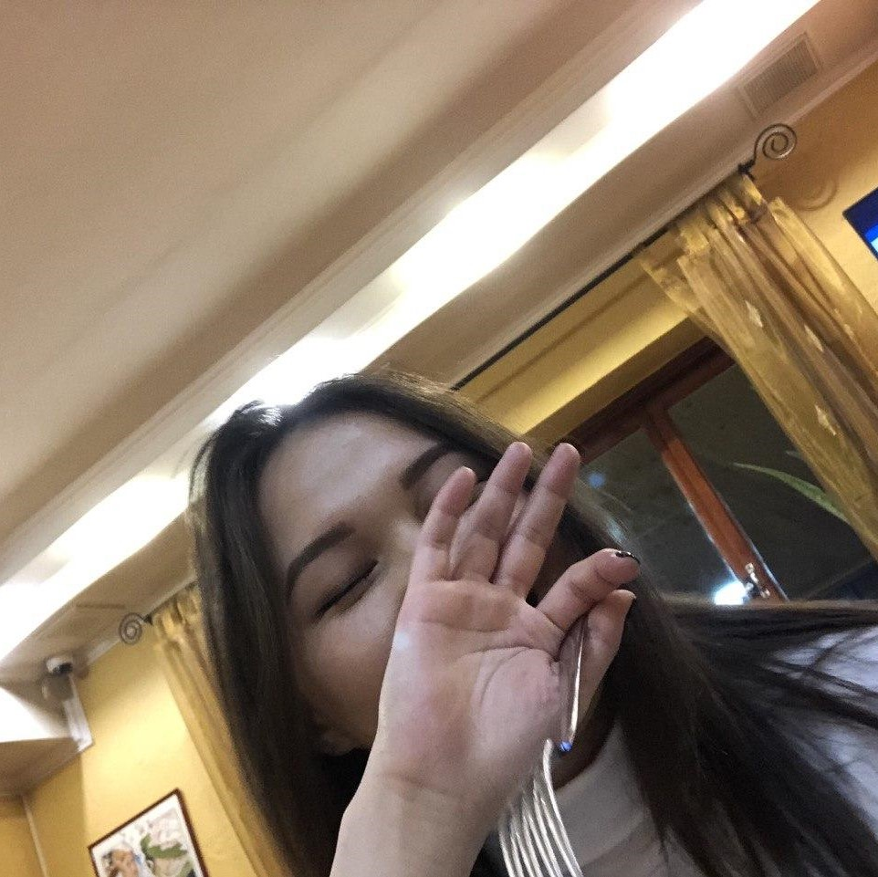
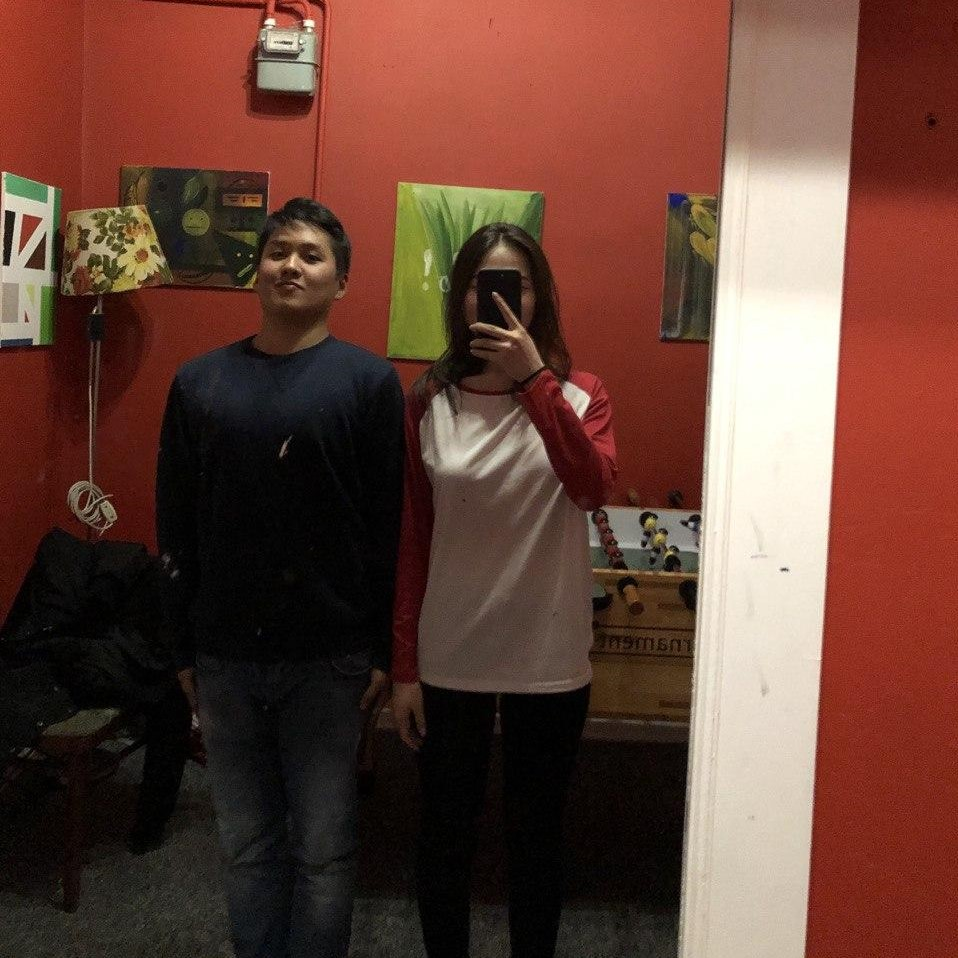
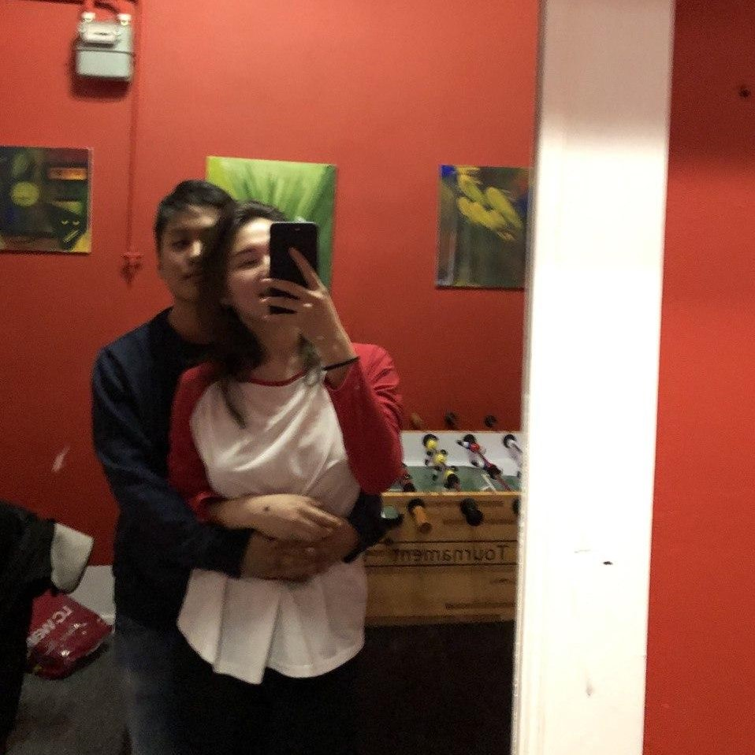
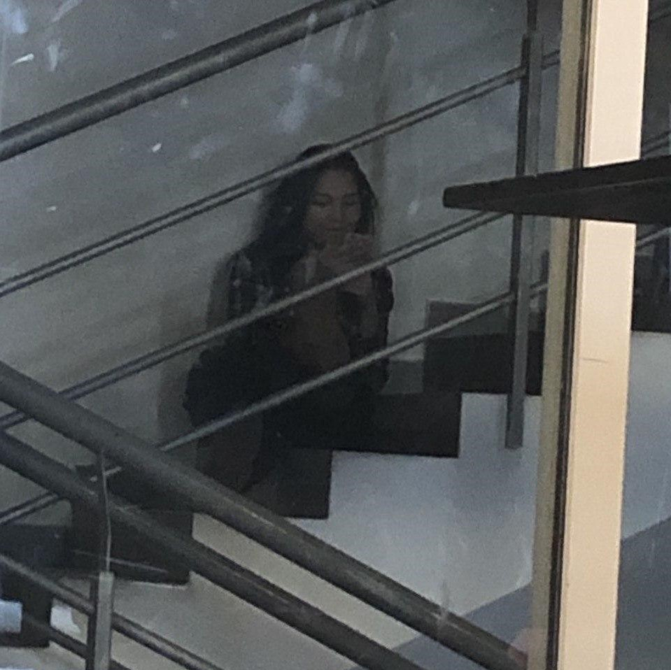
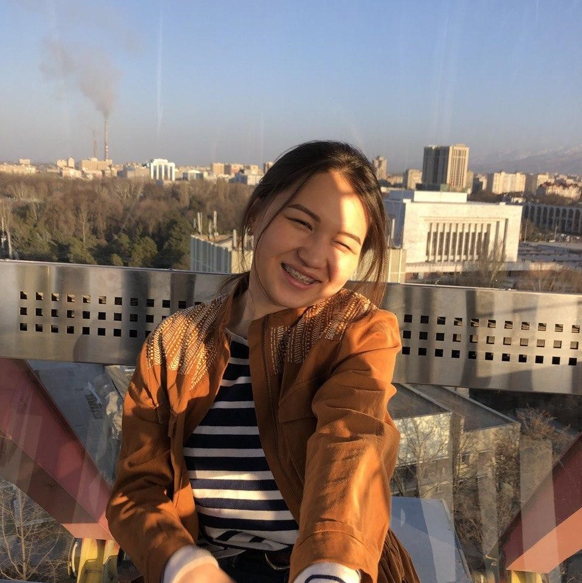

Dear Aidina
I have spent my last 2 months of my life with you and I can say that they were one of the happiest 2 months of my life. I would have never imagined that you would be the one that I would have truly deep feelings to. The feelings that I started having towards was when we were walking up to Love Park where we were the only people in that place. I still remember when we kissed and hugged standing on a thin ice over the frozen lake. In that moment I felt very happy that I was with you.
Love is a very complicated and yet a very simple thing at the same time. It is very hard to describe what love is. However, you will never understand what is love just by reading the definition, because it is something that you should feel at least once in your life. I feel it. Love is actually there. I do believe in love now.
There are no real reasons of why one person loves another. I think there will never be any reasons for why you love that specific person. And that is the case with me. However, there are still some things that I love about you.
I love you, because you are Aidina. You are beautiful. The first time I actually noticed that you are beautiful was when I saw your Instagram page, but I never really took you as something serious. You are not your Instagram page.
The most important thing that I fell in love with you is your personality. Personality is what makes you, you. You are easy going, you try to always look for the bright side of any problem and I love that you forget about them easily and you go on with you life.
I love that we are always on the same page. Whenever I start joking you understand them right away and it does not take you too long to join me. I think this is the most common thing that we have with each other that we understand each other’s joke and we try to support and just have fun
 I love that you are open-minded. You are open for new ideas and it excites you just the way it excites me. You always to try to look for new ideas, new games and new topics to talk about. I will never get bored with you.
I love you for your braveness. You are not afraid of most things. You try to just go face the consequences of your actions. You are not afraid to do many things that you actually want to do. I also respect you for that.
I love you that you never stop learning. You are ready to do mistakes and learn from them. Anyone makes mistakes and you also, but you are different from others, because you learn from them. You are ready to accept your faults. It is also something that I respect because you always growing as a person.
There is a list of things that I love and respect about you. It will take me hours to list them. What I wanted to say with this letter is that I love you. I love you. I never said that to someone. You are my first real love and I hope the last one.